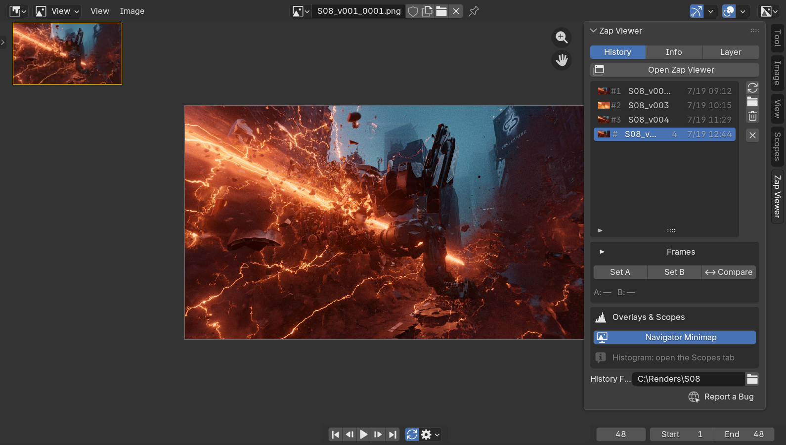
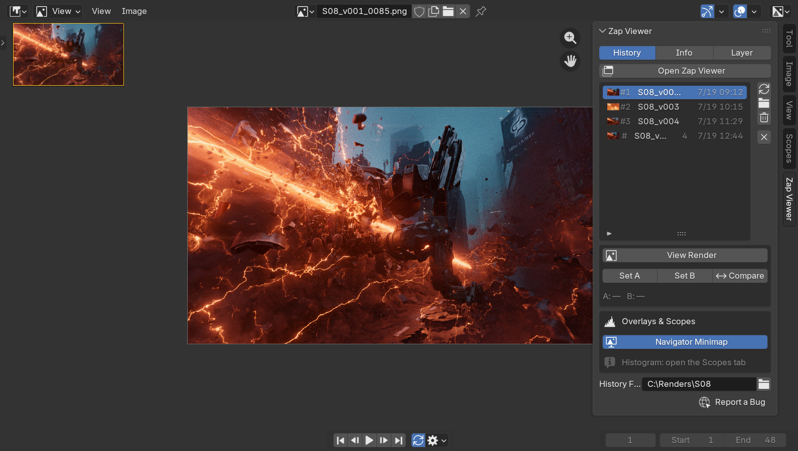

A real picture viewer in its own window. Every F12 lands in one labelled list you can compare, play back and reopen tomorrow.

Blender keeps eight render slots, and each new render overwrites one. Quit, and they are gone. So you end up comparing from memory.
Each render is saved as a real file and added to the list. Name them "v1 key light", "v2 warmer" and tell them apart at a glance.
Everything you do with a render after it finishes, in the same window.
Pick A and B, drag the wipe. Pan and zoom stay locked together.
An animation is one entry. Play it, scrub it, catch the flicker.
Every frame's render time and the average. Find the slow one.
Bring in a farm's output folder. Numbered frames become one sequence.
Search, stars and sorting are off until you touch them, so your list looks the same after the update.
Type a name, star the keepers, show only favourites.
Set A and B, and it lists the settings that differ.
Every entry is an image file in a folder you pick. Quit Blender, reopen the .blend, and the whole history is back.

Every F12 and every animation, saved as files and listed with a label.
Search, filter, star and sort a long history.
A/B wipe, plus the list of settings that changed.
Sequences play and scrub without moving your scene's frame.
Per-frame render times, which Blender does not keep.
Renders made elsewhere, without copying them.
All six. No subscription, no Free/Pro split, free updates.
Use code ZAP25 at checkout.
Tested on 5.1 and 5.2.
Pure Python. Nothing to install outside the zip.
Stills and animations.
Yes. A saved multilayer EXR has the same passes Blender writes: Combined, Depth, Normal, Cryptomatte, every view layer.
No. The new controls are off until you use them. Renders from before 2.10 have no settings to show in Info.
With blender -b it opens no window. Import the output folder afterwards.
Your renders stay in the folder they were saved to. Nothing lives inside the add-on.
With Multi-View on, an F12 still is not added, and the panel says so. Stereo sequences are kept.
$19, once. Your renders stay yours.
See what is new in 2.10 →